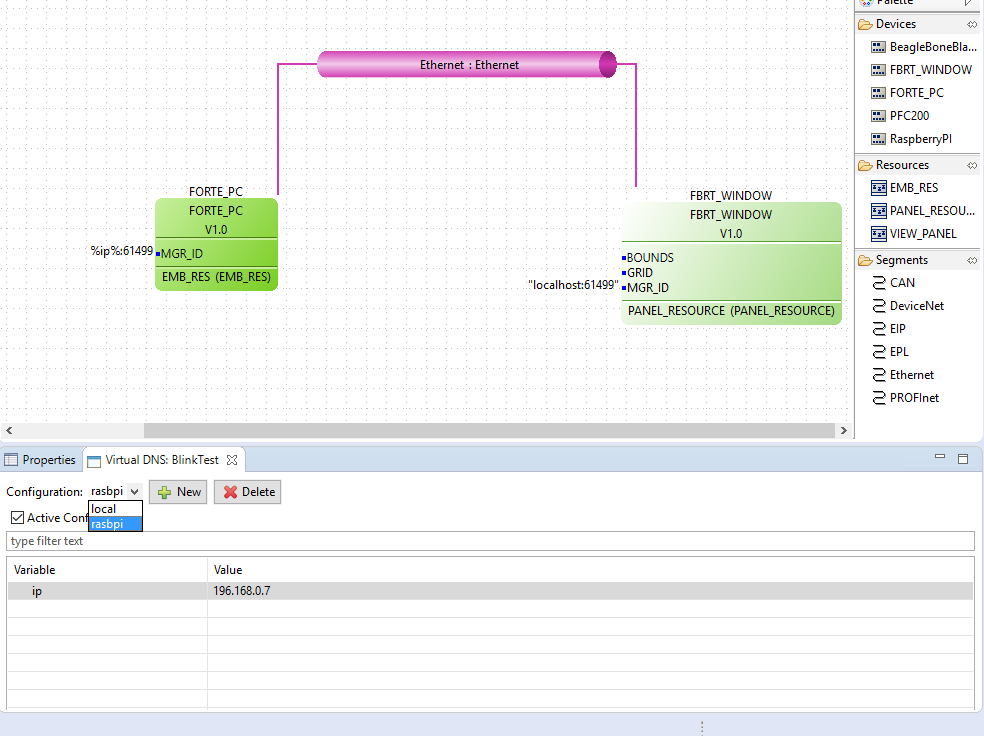
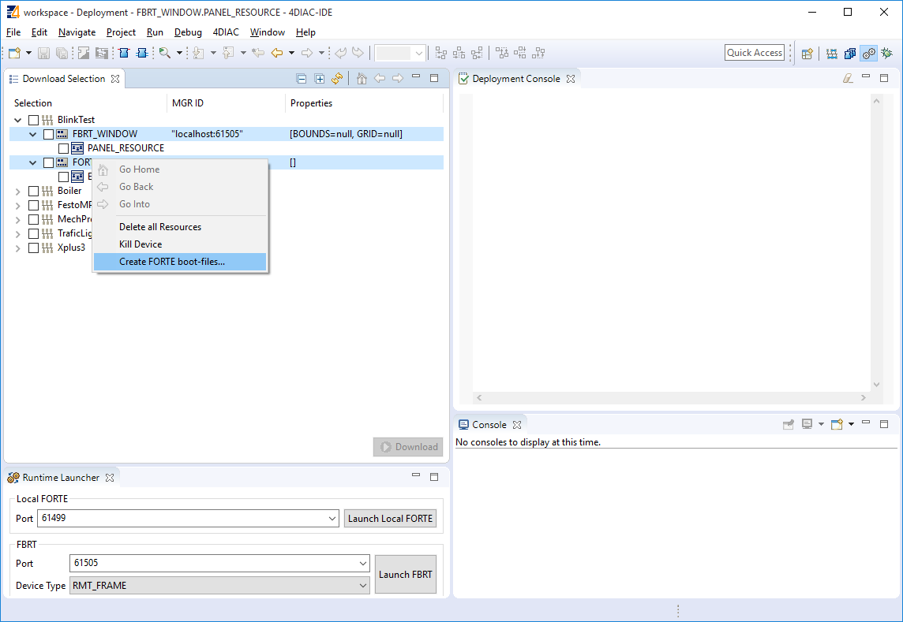
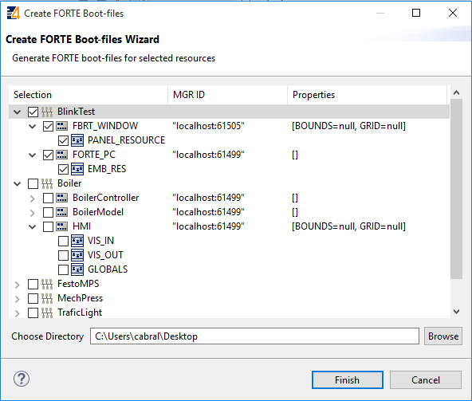

This page is part of a guide that gives a walk-through over the major 4diac IDE features.
This page shows the following interesting features in 4diac IDE that might improve your work:
Existing Systems can be imported as follows:
By default, new systems contain a copy of the IEC 61499 types in the tool-library. If different types are needed, for example from another project or another IEC 61499 engineering tool, these type files can be easily added by copying them into the project directory to the desired location. Furthermore, the Type Navigator allows to drag and drop types between projects as well as within a project to a different folder.
The Properties View provides a Virtual DNS editor. This functionality allows defining a set of variables, which are replaced by a specified value. The variable names can be used for parameters of Function Blocks and Devices. During the deployment, all variables which are available in the VirtualDNS are replaced with the specified value. For using a variable, the variable name has to be written between %. In the example below, two Configurations were created: local and rasbpi. The configuration rasbpi has the ip variable set to a value of 192.168.0.7, and the local to 127.0.0.1. In the main view, the variable ip is used as the ip address of the FORTE device. When you want to use a local FORTE, just change the configuration and check Active Configuration instead of changing each time the value.
When the option FORTE_SUPPORT_BOOTFILE is enabled for the FORTE you are using, on startup FORTE tries to load a so called boot-file. This boot-file has to be located in the same directory as your FORTE binary and needs to be named forte.fboot. This file contains the FB network configuration for the device and will be automatically instantiated during startup of FORTE.
In order to create such boot-files, you need to select one or more devices or resources in the Download Selection View and select from the context menu.

In the wizard, you can then select the devices and resources for which you wish to create boot-files as well as the directory where to place them.

On pressing one boot-file will be created per device. This boot-file will contain the selected resources and the FB networks contained in the resources. As only the resources selected are included in the boot-file, you can have a larger set of resources during development (e.g., for test-code) and use only the main resources for the boot-file. The name of the boot-file will be a combination of system and device name dot fboot. Before using it you need to rename it to forte.fboot.
The last step is optional, and shows some advanced features of 4diac IDE that you might use in more complicated applications.
Step 6 (optional) - Advanced Features
If you want to see some examples, the following link is an index of the available examples in the documentation:
If you have a specific platform that has input and outputs that is supported by FORTE, for example a Raspberry Pi or a PLC, and you want to use them, go to following page:
Parameters for different platforms
If you want to use a specific communication protocol supported by FORTE, for example MQTT, OPC UA, Modbus and so on, go to this page:
If you want to go back to see again how to create your own Function Blocks, here's a link:
Step 4 - Create your own Function Blocks
If you want to go back to the Start Here page, we leave you here a fast access: